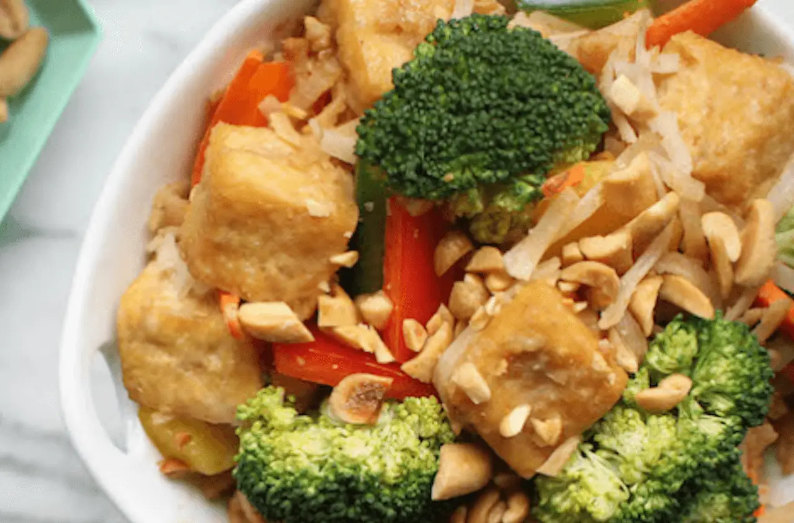

Tofu Pad Thai

Description
Extra firm tofu brings clean protein to this dish, and frozen broccoli packs it with additional micronutrients. Unlike most Pad Thai, this recipe contains no dietary cholesterol or fish sauce. All around, this dish is a great example of transforming a standard favorite into something more wholesome.
Ingredients
- 1½ tablespoon olive oil
- ½ block extra firm tofu
- 1 carrot
- 2 cloves garlic
- ¼ cup water
- 4 ounces brown rice noodles
- 2 cups frozen broccoli
- 2 tbsps peanut butter
- 1 tablespoon + 1 teaspoon apple cider vinegar
- 2 tablespoons low-sodium soy sauce/tamari
- 1 lime
- Sriracha, to taste (optional)
Directions
- Heat olive oil over medium heat in a large flat saute pan. (To make this recipe oil-free, omit the oil and use a non-stick pan.)
- Drain the extra firm tofu and cut into small cubes and place them in the warm pan in a single layer. Regularly flip the extra firm tofu so it doesn't stick to the pan, and so it gets an evenly golden brown cook on each side. (This will take 10-15 minutes.)
- Produce Prep: While the extra firm tofu is cooking, wash the carrot. With a peeler, peel the carrot lengthwise into long ribbons. Not a lot of time? Just chop up the carrots into bite-sized pieces. Peel and mince the garlic.
- Heat water in a pot and cook the brown rice noodles according to the directions on the box. (Don't overcook them!)
- After 10-15 minutes of extra firm tofu-cooking, add the frozen broccoli to the tofu pan. If you don't love raw garlic, add the garlic here! Cook for another 5 minutes, or until frozen broccoli is warm throughout. Add the carrot ribbons to the extra firm tofu right before you turn off the heat to give them a very mild cook.
- Peanut Sauce: In a deep bowl, mix the peanut butter, apple cider vinegar, soy sauce, garlic (if you enjoy it raw) and water together. If you have salted peanut butter then you may want to decrease the soy sauce (and increase water by that amount) so the dressing doesn't come out too salty. To combine all the ingredients, whisk vigorously with a whisk or a fork. Some find it easier to shake up the ingredients in a tightly sealed jar.
- Drain the brown rice noodles and place them back in the pot (removed from heat). Mix the sauce with the brown rice noodles while they're still hot.
- To plate, top the brown rice noodles with extra firm tofu and vegetables, and squeeze a lime wedge onto the dish before serving. If desired, drizzle with sriracha.